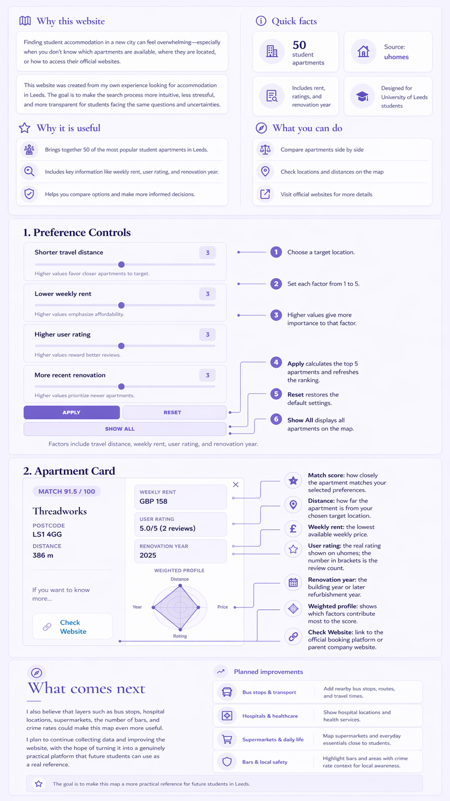

Housing panic? Cancelled. We've mapped out 50 Uni of Leeds dorms just for you. Poke around the markers or ranked cards to scope out the details and find your ultimate match.

Developer: Hanyue Luo, University of Leeds, trfb0853@leeds.ac.uk